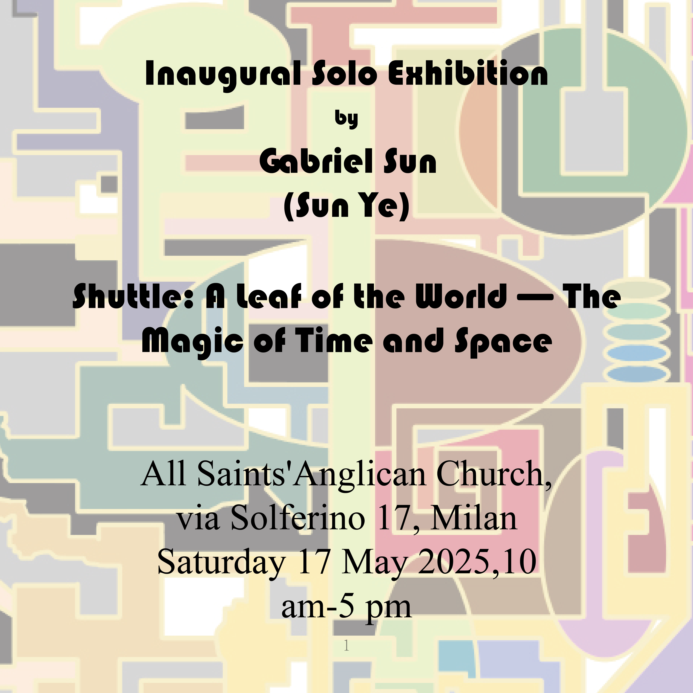
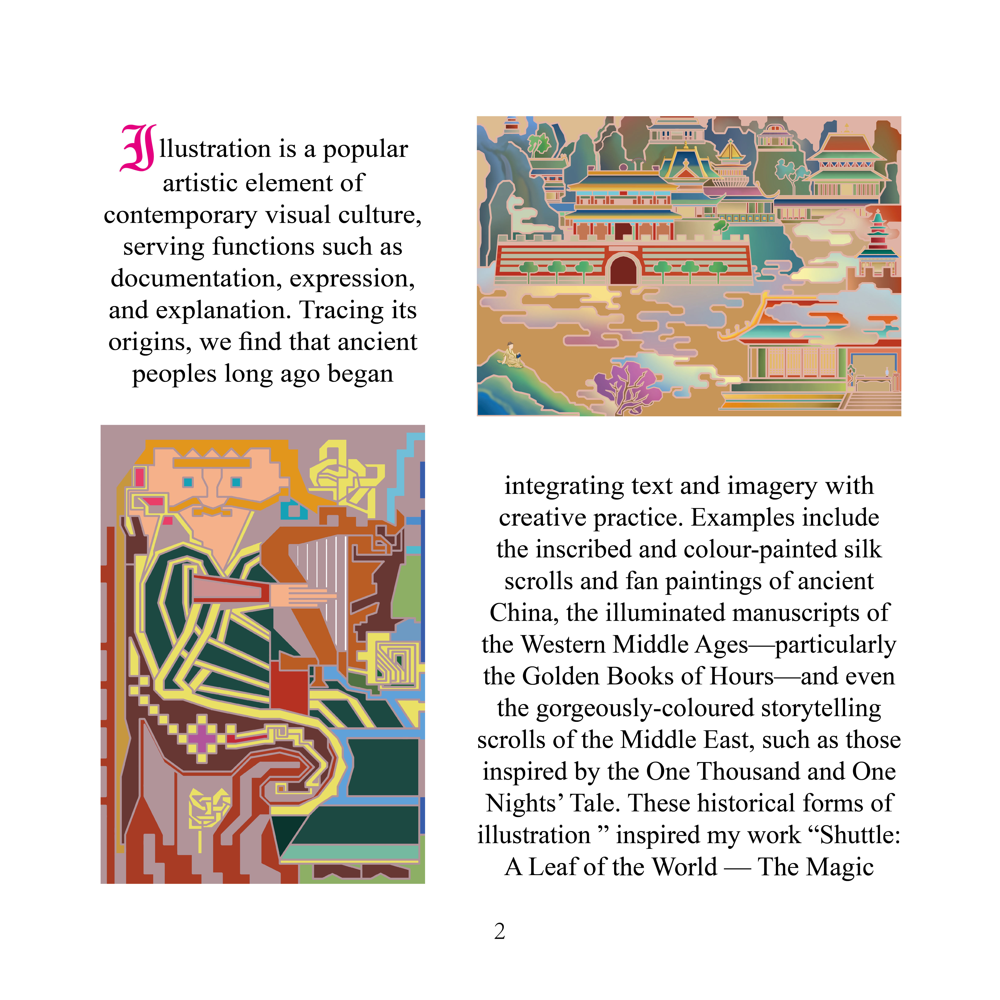
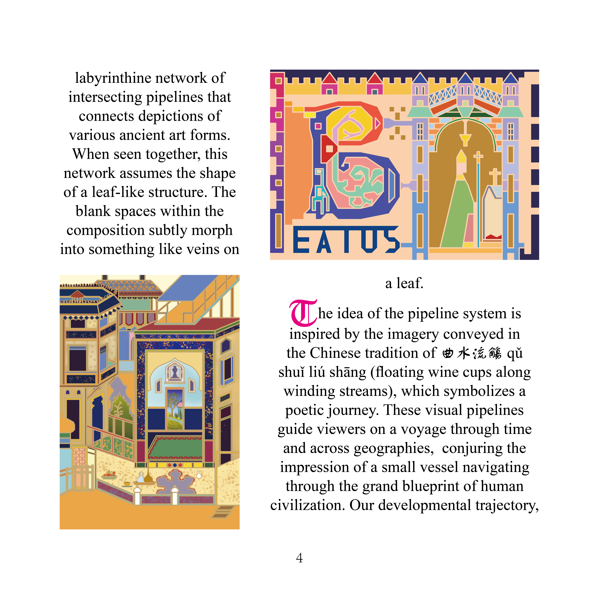
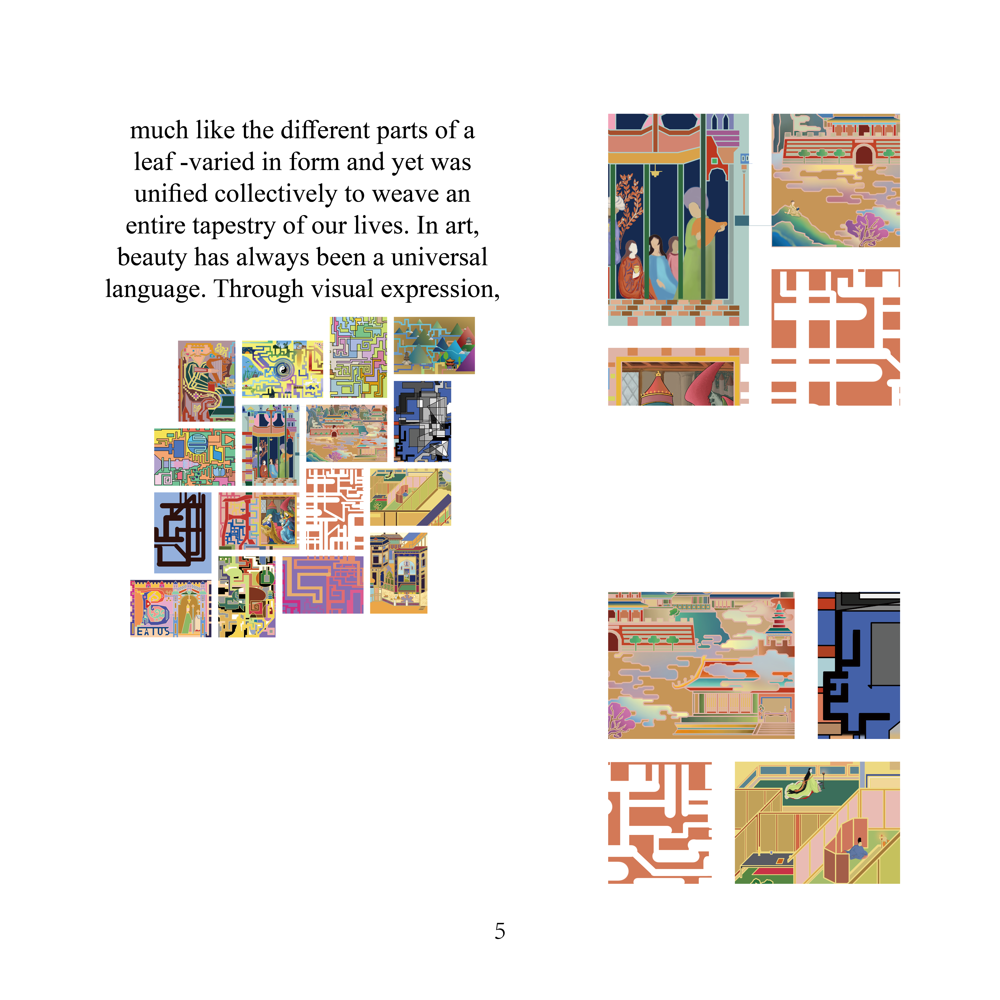
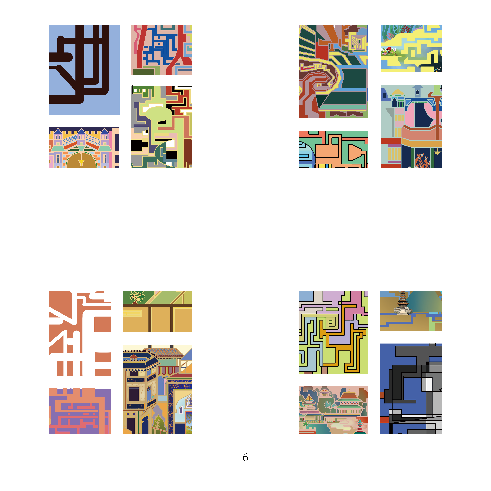
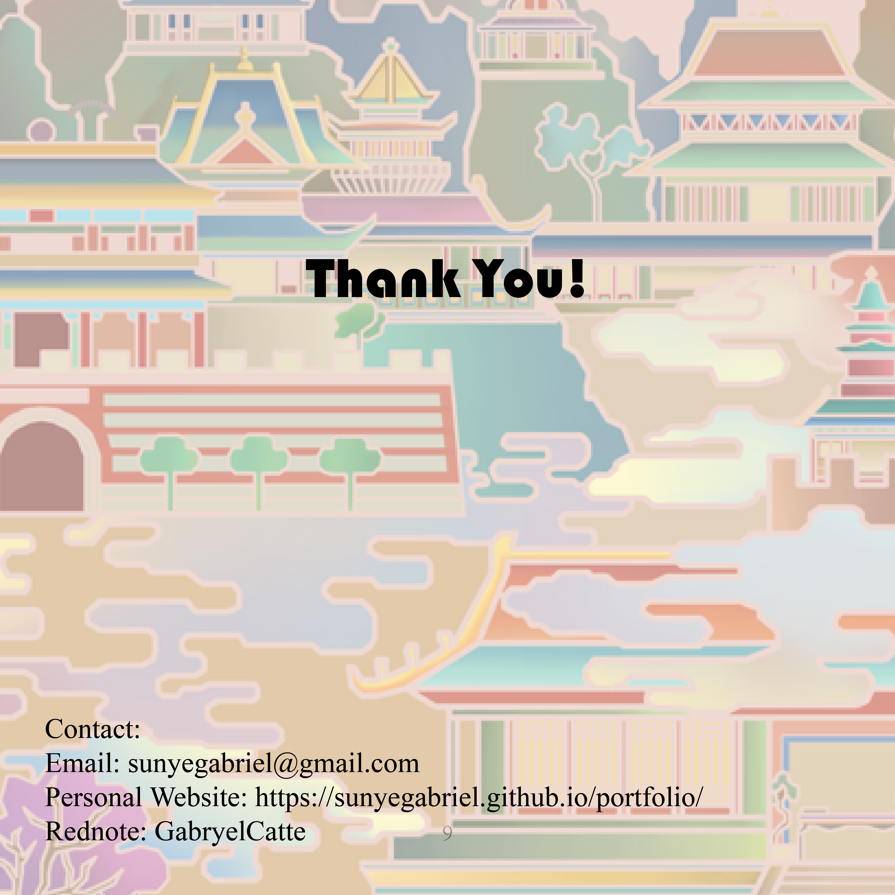

Adobe Suite · Illustration
Case Study · Illustration & Art History
Readable Art Shuttle
Reimagining Images from Historical Scrolls: A Leaf of the World—The Magic of Time and Space
Historical Scrolls · Visual Translation
Visual Design · Art History
Readable Image Sequence
Project Overview
A visual design project reimagining historical scroll imagery through illustration, Adobe Suite workflows, and art-historical research.
Illustration
Adobe Suite
Art History








